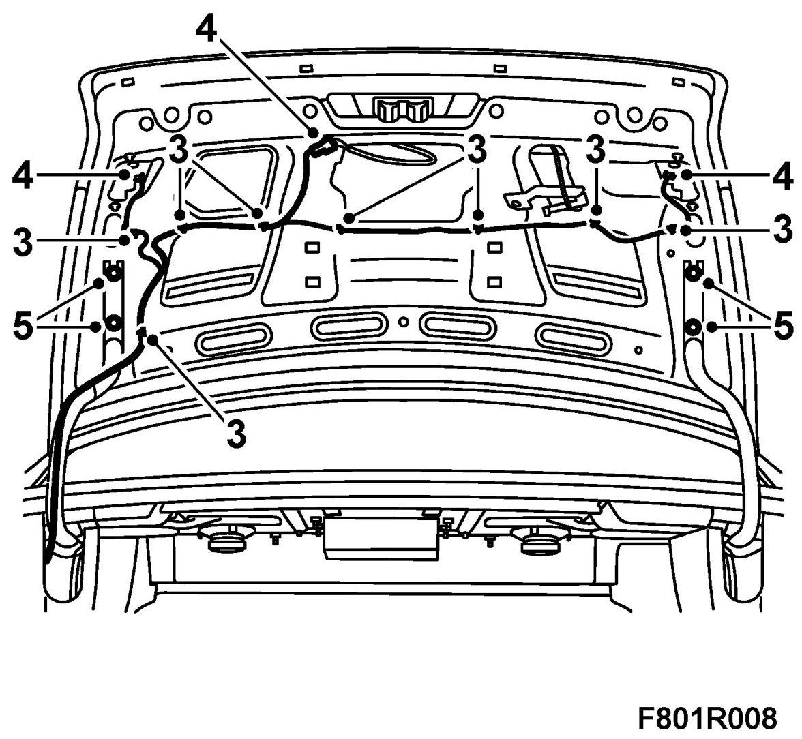
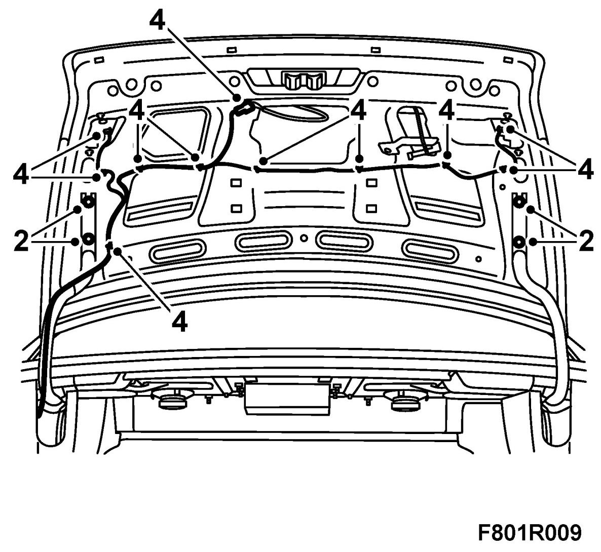
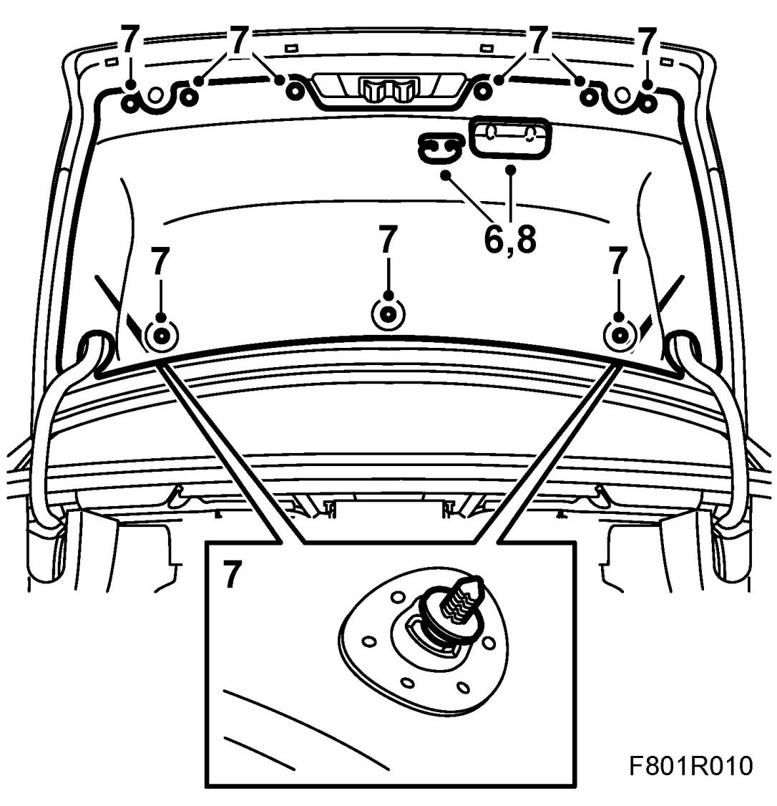

Bootlid
Bootlid
1. Remove the inner handle.
US/CA: Loosen the emergency opening handle from the trim. Loosen the wire from the handle.
2. Remove the bootlid trim.
3. Loosen the cable harness's clips using a pair of pliers.
4. Part all connectors.

5. Remove the lower bolts and loosen the upper bolts.
6. Get someone to help you lift off the bonnet lid.
IMPORTANT: Ensure that the glass is not damaged.
Fitting
1. Lift the bonnet lid into position with the help of a colleague.
IMPORTANT: Ensure that the glass is not damaged.
2. Fit the bolts

3. Tighten the bolts.
4. Fit the cable harness's clips and connect all connectors. Check the alignment of the bootlid.
5. Lift up the trim.
6. US/CA Insert the emergency opening wire through the trim.

7. Fit the bootlid trim.
8. Fit the inner handle.
US/CA: Fit the emergency opening handle on the wire. Fit the handle to the trim. Check the function of the emergency opening handle.